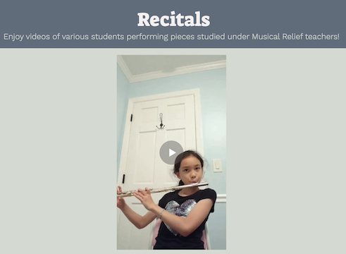
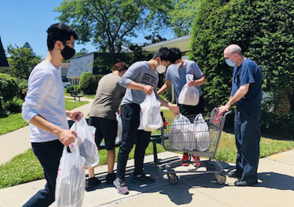

Musical Relief
Co-Founder, Flute Mentor
 This is my student Mio performing Twinkle Twinkle Little Star Source: MusicalRelief
 Some of our teachers delivering food to the Mid Island Jewish Community Center Source: Instagram